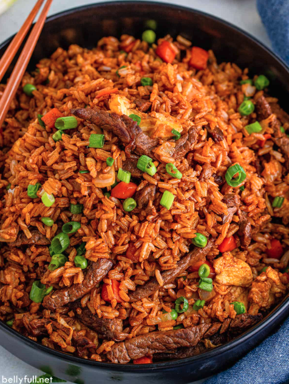

Fried Rice

Description
Making a plate of this magical rice will not only change your life, but it will be pivotal in
creating a sustainable environment for your happiness. This is the type food you make to impress
the people you want to impress. Good luck and best wishes chef!
Ingredients:
- 2/3 cup choppeed baby carrots
- 1/2 cup frozen green peas
- 2 tablespoors vegetable oil
- 1 clove garlic, minced, or to taste
- 2 large eggs
- 3 cups leftover cooked white rice
- 1 tablespoor soy suace, or more to taste
- 2 teaspoons sesame oil, or to taste
Steps:
- Assemble all the ingredients.
- Place carrots in small pan covered in water.
- Bring water to a low boiling point and then add peas while stirring.
- Strain the vegetables and then place in wok.
- Add garlic to all vegetables in wok and then add eggs. Make sure to stir!
- Add the rice and add soy sauce with sesame oil.
- Toss all the ingredients one last time.
- Now it's ready to be served and eaten!